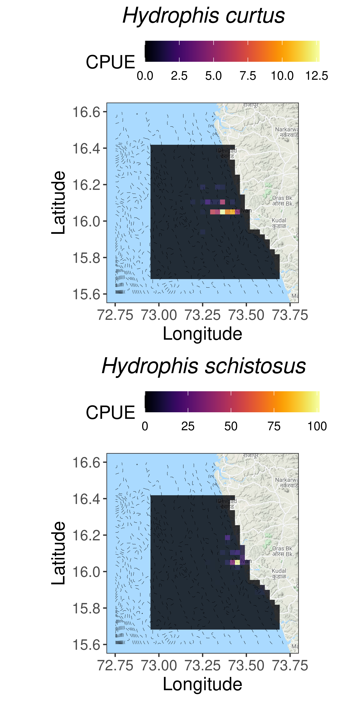

2 Difference in distribution and habitat use between H. curtus and H. shcistosus
We investigated the study species used ssimilar areas for foraging and other activities using survey data gathered from fishermen. We tested differences in depth use and overlap in space.
2.1 Calculating abundance of sea snakes per fishing trip
snakes_den = snakes%>%
filter(Species == "Hydrophis schistosus" | Species == "Hydrophis curtus",
Fishing.Location != "",
!is.na(Depth.Caught..m.))%>%
dplyr::select(Species, Fishing.Location, Depth.Caught..m., Date, Boat.Name.Owner, # selecting relevant variables
No..of.Hauls, Average.Haul.Duration..Hours., Gear.Type)%>%
group_by(Gear.Type)%>% # completing missing effort data
mutate(n.hauls = ifelse(is.na(No..of.Hauls),
median(No..of.Hauls, na.rm = T),
No..of.Hauls),
haul.time = ifelse(is.na(Average.Haul.Duration..Hours.),
median(Average.Haul.Duration..Hours., na.rm = T),
Average.Haul.Duration..Hours.))%>%
group_by(Date, Boat.Name.Owner)%>%
summarise(HC = sum(Species == "Hydrophis curtus"), # calculating abundance per trip
HS = sum(Species == "Hydrophis schistosus"),
effort = last(n.hauls*haul.time), # calculating fishing effort per trip
Fishing.Location = last(Fishing.Location),
Depth.Caught..m. = last(Depth.Caught..m.))%>%
gather(c("HC", "HS"), value = n, key = "Species")%>%
mutate(CPUE = n/effort)%>% # calculating catch per unit effort of each specie per trip
drop_na() # removing missing values2.2 Sample size
The number of trips and total haul hours sampled by gear.
snakes%>%
filter(Species == "Hydrophis schistosus" | Species == "Hydrophis curtus",
Fishing.Location != "",
!is.na(Depth.Caught..m.))%>%
dplyr::select(Species, Fishing.Location, Depth.Caught..m., Date, Boat.Name.Owner, # selecting relavant variables
No..of.Hauls, Average.Haul.Duration..Hours., Gear.Type)%>%
group_by(Gear.Type)%>% # filling in missing effort data
mutate(n.hauls = ifelse(is.na(No..of.Hauls),
median(No..of.Hauls, na.rm = T), No..of.Hauls),
haul.time = ifelse(is.na(Average.Haul.Duration..Hours.),
median(Average.Haul.Duration..Hours., na.rm = T),
Average.Haul.Duration..Hours.))%>%
group_by(Gear.Type, Date, Boat.Name.Owner)%>%
summarise(effort = last(n.hauls*haul.time))%>% # calculating effort per trip
group_by(Gear.Type)%>%
summarise(n_trips = n(),
effort = sum(effort))%>%
drop_na()| Gear.Type | n_trips | effort |
|---|---|---|
| GillNet | 198 | 270.56 |
| Rampan | 30 | 107.45 |
| Trawler | 20 | 92.75 |
snakes%>%
filter(Species == "Hydrophis schistosus" | Species == "Hydrophis curtus")%>%
summarise(HS = sum(Species == "Hydrophis schistosus"),
HC = sum(Species == "Hydrophis curtus"))| HS | HC |
|---|---|
| 605 | 179 |
2.3 Geocoding sea snake encounters
In order to map sea snake distribution and study depth use we used location and depth data gathered from fisher surveys to map each fishing trip.
The protocol for geocoding fishing trips is as follows:
- Nearest landmarks are geocoded from google maps API
- Latitude is extracted from landmark geocode
- Match landmark latitude and depth from survey to GEBCO data
- Extract final longitude from GEBCO data
The protocol is encoded in Function/geocode.R
source("./Functions/geocode.R")
snakes_den <- geocode.trips(snakes_den, fl = 'Fishing.Location', dep = 'Depth.Caught..m.')
# removing duplicates introduced by fuzzy joining
snakes_den <- distinct(snakes_den, Date, Boat.Name.Owner, Species, Fishing.Location, Depth.Caught..m., .keep_all = T)
# saving output
write.csv(snakes_den, "./Data/snakes-density.csv")Note: fuzzyjoin::fuzzy_inner_join() introduces many duplicates, I have not as yet been able to fix the issue dirrectly. Currently, removing duplicates from output using dplyr::distinct().
2.4 Mean CPUE by species
Each fishing trip is assigned to a cell in the sampling grid. Total CPUE of each species in each grid cell is then calculated.
# loading libraries
library(raster)
# raster with study site extent
ext <- raster("./Data/sampling_extent.tif")
# importing functions
source("./Functions/intensity extract.R")
source("./Functions/raster to df.R")
## Calculating sea snake CPUE
den <- snakes_den%>%
group_by(Species)%>%
nest()%>%
mutate(m = map(data, ~map.extract(df = ., var = "n", func = 'sum')),
mdf = map(m, map.df))%>%
dplyr::select(mdf)%>%
unnest()%>%
spread(Species, layer)
# Mean, sd CPUE
den%>%
skimr::skim(HC, HS)%>%
skimr::yank("numeric")%>%
dplyr::select(-hist)Variable type: numeric
| skim_variable | n_missing | complete_rate | mean | sd | p0 | p25 | p50 | p75 | p100 |
|---|---|---|---|---|---|---|---|---|---|
| HC | 0 | 1 | 0.16 | 1.22 | 0 | 0 | 0 | 0 | 14.78 |
| HS | 0 | 1 | 0.54 | 4.38 | 0 | 0 | 0 | 0 | 86.78 |
2.5 Area used by species
The area (km^2) occupied by a species calculated as the number of grid cells that a species was found in multiplied the area of each cell (10 sq. km.).
snakes_den%>%
group_by(Species)%>%
nest()%>%
mutate(m = map(data, ~map.extract(df = ., var = "CPUE", func = 'sum')),
mdf = map(m, map.df))%>%
dplyr::select(mdf)%>%
summarise(spatial_extent = map(mdf, ~sum(.$layer>0)))%>%
unnest()%>%
mutate(spatial_extent = spatial_extent*10)| Species | spatial_extent |
|---|---|
| HC | 540 |
| HS | 610 |
2.6 Mapping sea snake distributions
## importing required libraries
library(marmap)
library(ggmap)
## getting deoth data downloaded from GEBCO
depth <- readGEBCO.bathy("./Data/gebco_2020_n16.7_s15.5_w72.0_e73.9.nc")
depth = fortify.bathy(depth)%>% # converting to usable data frame
dplyr::rename(lon = x, lat = y, depth = z)%>%
filter(depth < 1)
## Getting base map
base <- get_googlemap(center = c(mean(snakes_den$lon),mean(snakes_den$lat)),
zoom = 9, scale = 4, maptype = "terrain")##Getting basemap
## importing plotting function
source("./Functions/intensity_plot.R")
## making plot
snake_plot <- snakes_den%>%
mutate(Species = ifelse(Species == "HC", "Hydrophis curtus", "Hydrophis schistosus"))%>%
group_by(Species)%>%
nest()%>%
mutate(m = map(data, ~map.extract(df = ., var = "CPUE", func = 'sum')),
mdf = map(m, map.df),
plot = map2(mdf, Species, ~int.plot(mdf = ., Species, name = "CPUE", title.face = "italic")))%>%
gridExtra::grid.arrange(grobs = .$plot, ncol = 2)
## saving high res figure
ggsave(snake_plot, filename = "./Figures and Tables/figure1.tiff", width = 8, height = 6, dpi = 300)Figure 1: Distribution and depth use of sea snake in the near shore waters of Sindhudurg, Maharashtra based on fisheries dependent data.
2.7 Summarising depth use by species
# Calculating mean depth in cell
dep <- depth%>%
nest()%>%
mutate(m = map(data, ~map.extract(df = ., var = "depth", func = mean)),
mdf = map(m, map.df))%>%
dplyr::select(mdf)%>%
unnest()%>%
rename(mean.depth = layer)
#Calculating relative abaundance of sea snakes in each cell
den<- den%>%
inner_join(dep, by = c("x", "y"))%>%
mutate(rel.prop = HC/(HC+HS))
# Relative proportion of H. curtus with depth
den%>%
gather(c("HS", "HC"), key = sp, value = CPUE)%>%
filter(CPUE>0)%>%
group_by(sp)%>%
skimr::skim(mean.depth)%>%
skimr::yank("numeric")%>%
dplyr::select(-hist)Variable type: numeric
| skim_variable | sp | n_missing | complete_rate | mean | sd | p0 | p25 | p50 | p75 | p100 |
|---|---|---|---|---|---|---|---|---|---|---|
| mean.depth | HC | 0 | 1 | -28.55 | 12.10 | -48.29 | -37.67 | -30.20 | -20.21 | -1.56 |
| mean.depth | HS | 0 | 1 | -18.26 | 10.35 | -39.33 | -24.23 | -17.82 | -9.49 | -1.53 |
2.8 Spatial segregation by species
We caluclated the spatial overlap between H. curtus and H. schistosus as the area (number of cells*10 sq. km.) in which both species occured together divided the by the total area in which atleast one of the species occured.
den%>%
summarise(total.extent = sum(HC>0 | HS>0)*10,
overlap = sum(HC > 0 & HS > 0)*10,
relative_overlap = overlap/total.extent)| total.extent | overlap | relative_overlap |
|---|---|---|
| 860 | 290 | 0.3372093 |
2.9 Modelling depth use by species
# t-test for cell depth
den%>%
gather(c("HS", "HC"), key = sp, value = CPUE)%>%
filter(CPUE>0)%>%
dplyr::select(sp, mean.depth)%>%
nest()%>%
mutate(mod = map(data, ~t.test(mean.depth ~ sp, data = .)),
sumry = map(mod, broom::tidy),
d = map(data, ~lsr::cohensD(mean.depth ~ sp, data = .)))%>%
dplyr::select(sumry, d)%>%
unnest()%>%
dplyr::select(estimate:p.value, d)| estimate | estimate1 | estimate2 | statistic | p.value | d |
|---|---|---|---|---|---|
| -10.28462 | -28.54587 | -18.26125 | -4.865557 | 4e-06 | 0.9177882 |
# testing effect of cell depth on relative abundance
den%>%
gather(c("HS", "HC"), key = sp, value = CPUE)%>%
mutate(rel.prop = ifelse(sp == "HS", 1 - rel.prop, rel.prop),
mean.depth = -mean.depth)%>%
dplyr::select(sp, rel.prop, mean.depth)%>%
group_by(sp)%>%
nest()%>%
mutate(prop_dep = map(data, ~lm(rel.prop ~ mean.depth, data = .)),
sumry = map(prop_dep, broom::tidy),
stat = map(prop_dep, broom::glance))%>%
dplyr::select(sumry, stat)%>%
unnest()%>%
dplyr::select(sp:p.value, adj.r.squared)| sp | term | estimate | std.error | statistic | p.value | adj.r.squared |
|---|---|---|---|---|---|---|
| HS | (Intercept) | 1.2403231 | 0.0712075 | 17.41844 | 0.0000000 | 0.5424777 |
| HS | mean.depth | -0.0265266 | 0.0026293 | -10.08877 | 0.0000000 | 0.5424777 |
| HC | (Intercept) | -0.2403231 | 0.0712075 | -3.37497 | 0.0011194 | 0.5424777 |
| HC | mean.depth | 0.0265266 | 0.0026293 | 10.08877 | 0.0000000 | 0.5424777 |
H. curtus was caught in deeper habitats than H. schistosus.